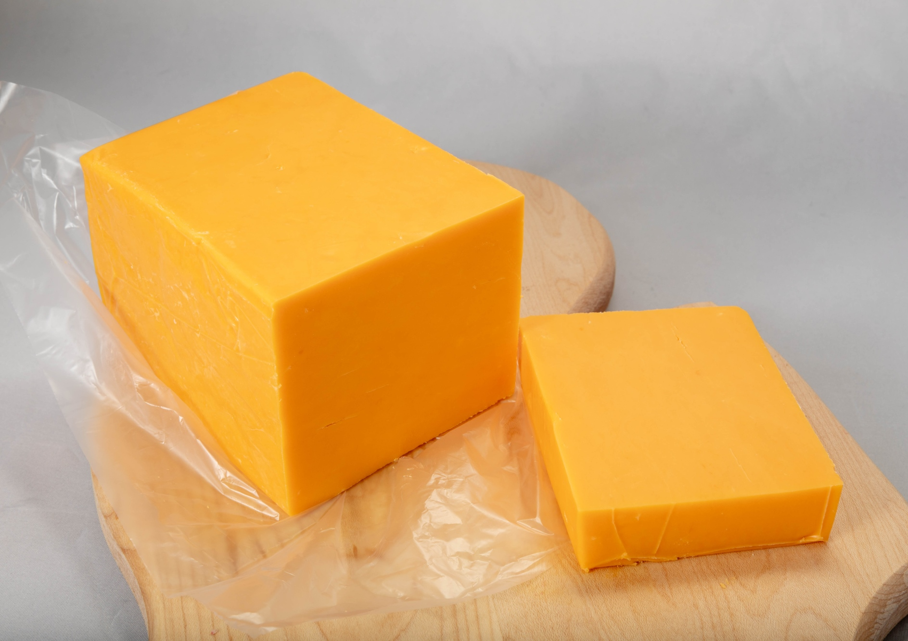

The Cheese Shrine
Get to know my favorite kinds of cheese.

Cheddar Cheese
Cheddar cheese is a relatively hard, off-white, sometimes sharp-tasting, natural cheese.
Originating in the English village of Cheddar in Somerset, cheeses of this style are now produced beyond the region and in several countries around the world.

Brie
Brie is a soft cow's-milk cheese named after Brie, the French region from which it originated.
It is pale in color with a slight grayish tinge under a rind of white mould. The rind is typically eaten, with its flavor depending largely upon the ingredients used and its manufacturing environment.